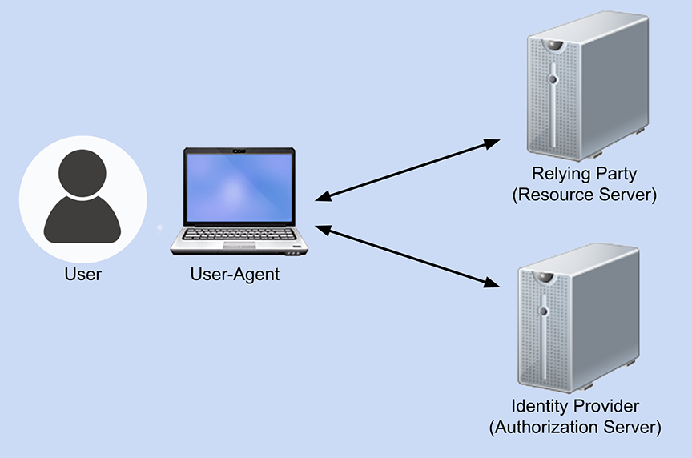
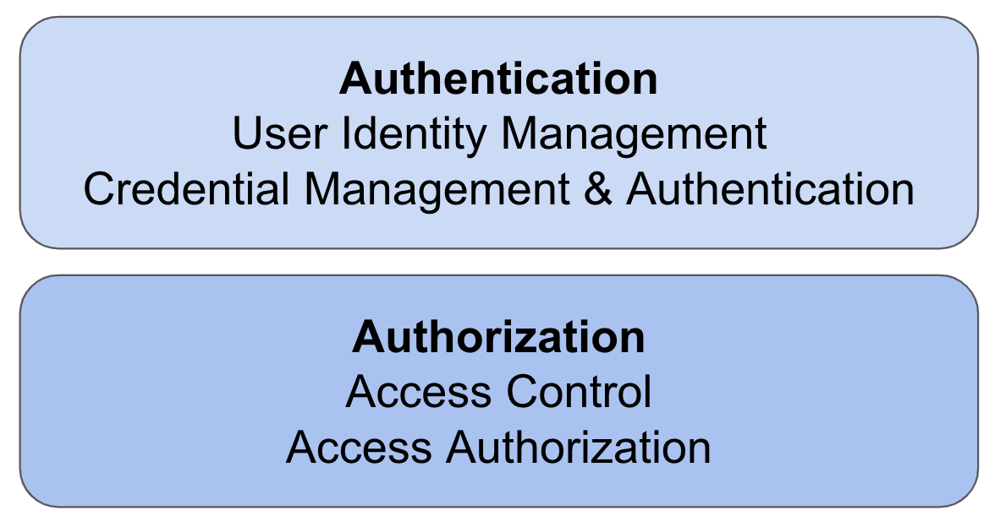

Overview
As noted in our charter, the purpose of the Federated Identity
Community Group is to provide a forum focused on incubating web features
that will both support federated identity and prevent opaque,
uncontrollable tracking of users across the web. The community group
recognizes the need to balance privacy concerns against the need to
explore innovative ideas around federated authentication on the web.
The initial work of the group focuses on the short-term goals as
prioritized by the urgency of changes already underway, such as the
phasing out of third-party cookies.
At the time of this report, the community group has several outputs,
including a detailed list of federated authentication protocol elements
and how they will be impacted by changes in third-party cookies, link
decoration, and bounce tracking. The community group has also begun to
document how different proposals and protocol elements might be used to
mitigate the changes being introduced as browsers add mechanisms to
prevent tracking. The group has one formal work item, the Federated
Credential Management API, that explores one potential path for some
services to follow as third-party cookies are deprecated.
Given the complexity of the use cases surrounding federated
authentication workflows, it is unlikely that any one proposal or work
item in any standards organization will resolve all the issues that
will arise as the low-level primitives on the web change or are removed.
Part of the work of the community group is to gather sufficient
information that developers will be able to determine what mix of
protocol elements, browser APIs, and other tools will meet their needs
in continuing to use federated identity on the web.
Terminology
a glossary of terms that have specific domain definitions and clarify
possible collisions as they relate to this context.
Credentials - When browser vendors refer to credentials, they typically
mean an object which allows a developer to make an authentication decision
for a particular action. (See also https://www.w3.org/TR/credential-management-1/#core)
Sign-in - the act of authenticating into an existing account. While the
user may experience this as part of the overall UX for a registration
process, it is a logically distinct activity from Sign-up.
Sign-out - the act of ending one or more sessions.
Sign-up - the act of establishing or registering an account with a
service. While an end-user can sign-up and sign-in simultaneously,
logically they are two separate actions. (Similar to how some sites make
the choice of “if you can authenticate, you are authorized to use/access
the service” despite authentication and authorization being two logically
distinct actions.)
Understanding Basic Federated Identity Flows
In any federated identity flow, there are effectively four parties
involved: the user, the user-agent (the browser or app) the user is
employing, the Relying Party that manages the resource the user is trying to
access, and the Identity Provider that is validating the user’s access.

Generally speaking, the frameworks and protocols involved in identity
federation most often are OAuth 2.0, OpenID Connect (OIDC), and SAML 2.0.
OAuth is a framework for providing authorization to protected resources.
OpenID Connect is an identity layer that works on top of OAuth and handles
the authentication of the user. Authorization indicates that the user should
have access to a resource, but it does not serve to connect the user to an
existing account. Authentication, on the other hand, is the process of
establishing that the entity requesting access can be connected with an
existing account; it does not indicate whether the user should have access
to anything.
SAML is similar to OpenID Connect in that it also handles the
authentication of the user. SAML, however, is an XML-based framework and
uses XML in its communications.

Currently, it’s possible for the Relying Party and Identity Provider to
collect information about the user that the user might not be aware of. It’s
also possible for different organizations to collude with one another to
join the data they’ve collected about a user (especially when the
credentials used include a global identifier such as a user’s email
address). As a result, user-agents are trying to take a more active role in
assuring their users’ privacy online, but there are still questions as to
what role a user-agent should play in federated identity flows.
There are four possible scenarios for the user-agent’s role:
- The status quo is kept, and the user-agent facilitates but doesn’t
take an active role.
- The user-agent does its best to highlight any potential privacy
risks for a user but doesn’t try to mitigate the risks directly.
Instead, the user-agent would ask the user to grant their permission
to continue. This is referred to as the permission-oriented approach.
- The user-agent takes a more active role by taking on some of the
current Identity Provider responsibilities. In this case, the
user-agent manages the user interface and account options shown to
the user. This is called the mediation-oriented approach.
- The final scenario is one where the user-agent takes on the most
active role. In it, the user-agent would not only manage the user
interface presented to a user but would also manage the presentation
of the required tokens to the Relying Parties. The Identity Providers
would still be responsible for issuing tokens but would be delegating
the submission of them to the user-agents. This is why it’s referred
to as the delegation-oriented approach.
Each option has compelling pros and cons that trigger debate. With the
first option, if the user-agents don’t limit how third-party cookies can
be used, they will be accountable for the resulting privacy issues and
concerns - making this an unlikely course of action. If the user-agents
continue with the planned privacy changes for third-party cookies, but do
nothing else, then the areas of identity federation that rely on
third-party cookies currently will stop working. This is also untenable,
so the first option seems unlikely.
With the second option of the user-agents highlighting the privacy
risks for their users, it does give users control over their privacy
choices. However, historically privacy prompts like this have proven to
be ineffective at best and a negative user experience at worst. It places
all of the responsibility with the users to understand the consequences of
their choices. Some users might welcome that, but others certainly
wouldn’t.
The third mediation option removes some of this burden from users, but
in turn it also complicates how the protocols would actually need to work.
It requires a significant amount of work on the standards that define
identity federation, and in turn, it will require a yet-to-be-determined
level of implementation work. It’s not a trivial change.
Finally, the fourth option, with the user-agent taking the most active
role, does protect users from having either the Relying Parties or
Identity Providers tracking them. However, it would also be the most
complicated change and would take the greatest amount of work from not
only the user-agents, but also the Relying Parties and Identity Providers
themselves. Specifically, the delegation-oriented model is not likely to
be backwards compatible with the current deployment, so it’s not a good
option as a preliminary solution (at least, as a mutually exclusive
option). The greater the amount of work involved, the longer it typically
takes to execute a change - and the deprecation of third-party cookies is
a deadline for this since third-party cookies are often currently
needed.
The other concern with the fourth option is that, while the tracking
risk from Relying Parties or Identity Providers is decreased, it doesn’t
stop the user-agent itself from engaging in user tracking (although trying
to restrict this would be something of an unrealistic requirement).
However, it does limit the number of potential bad actors, but it doesn’t
necessarily eradicate the tracking risk altogether because if the
user-agent itself is a bad actor, the user’s privacy would still be at
risk.
Relationship with Other Initiatives
Intersection with other efforts/initiatives (e.g., storage access API)
There are several low-level primitives that may impact federated
identity flows, including third-party cookies, first-party cookies,
LocalStorage, iFrames, redirects, link decoration, form posts, and
possibly popups.
The community group has developed a table that takes a high-level view
of the various authentication protocol primitives and whether or not
they are likely to be impacted by the deprecation of third-party cookies
as well as any changes in how browsers handle link decoration or
redirection. This table is a work-in-progress and is available in our
GitHub repository [PrimitiveUseCases]. A snapshot of the table is below:
| Usage |
Protocol |
Flow |
3P Cookies |
Link Decoration |
Redirect |
| Sign-in |
OIDC |
Implicit + form POST |
No |
Yes |
Yes |
| Sign-in |
OIDC |
Code flow |
No |
Yes |
Yes |
| Sign-in |
OIDC |
SPA: Code + PKCE |
No |
Yes |
Yes |
| Sign-in |
OIDC |
SPA: Implicit, fragment |
No |
Yes |
Yes |
| Sign-in |
SAML 2.0 |
Redirect + POST |
No |
Yes |
Yes |
| Sign-in |
SAML 2.0 |
Artifact binding |
No |
Yes |
Yes |
| Sign-in |
WS-Federation |
Redirect + POST |
No |
Yes |
Yes |
| Sign-out |
OIDC |
RP-Initiated Logout |
No |
Yes |
Yes |
| Sign-out |
OIDC |
Front-Channel Logout |
Yes |
Yes |
No |
| Sign-out |
OIDC |
Backchannel Logout |
No |
No |
No |
| Sign-out |
OIDC |
Session Management |
Yes |
No |
No |
| Sign-out |
SAML 2.0 |
Single Log Out (SLO) |
Maybe |
Yes |
Yes |
| Token Retrieval |
OAuth 2.0 |
Code flow |
No |
Yes |
Yes |
| Token Retrieval |
OAuth 2.0 |
SPA: Code + PKCE |
No |
Yes |
Yes |
| Token Renewal |
OAuth 2.0 |
SPA: background token renewal (iframe) |
Yes |
Yes |
Yes |
| Token Renewal |
OAuth 2.0 |
SPA: background token renewal (refresh token) |
No |
No |
No |
| Token Usage |
OAuth 2.0 |
JS bearer token |
No |
No |
No |
While there are elements of the identity protocols themselves (e.g.,
OAuth2, OIDC, SAML) that may be used to work around the deprecation of
some of those primitives (e.g., using a backchannel logout model in place
of a front-channel logout model), there are also work items in other
groups that are important to be aware of.
The Privacy Community Group has several proposals under development,
including First Party Sets, Storage Access, Storage Partitioning, and
several others.[PrivacyCG] Those proposals are not specifically targeted
to handle identity federation, but still may be potential solutions for
different scenarios.
Google has several proposals, some actively under discussion in a
community group, others being developed internally, that are being built
under their Privacy Sandbox efforts.[PrivacySandbox] Similarly, Mozilla’s
Firefox is focused on several privacy-related products, though none are
currently targeting the identity federation use cases. Apple’s WebKit has
focused on their Intelligent Tracking Protection efforts.[ITP]
The table below lists all of the proposals that might be useful for
different identity federation use cases. The proposal names are linked to
the Github repository where the proposal is being developed. There you
can find more information about the proposal, ask any questions you might
have, and provide any potential feedback.
| Initiative |
Focus |
Description |
| FedCM |
Federated Identity |
How to support federated identity without third-party cookies |
| Storage Access API |
Browser storage |
Requesting user permission to access first-party storage |
| CHIPS |
Third-party cookies |
Adds an attribute that allows third-party cookies which are partitioned and can only be used on the site they were set |
| First-Party Sets (FPS) |
Same entity/organization |
A mechanism where third-party cookies can be treated as first-party cookies when the domains are owned by the same organization |
| Login Status API (fka isLoggedIn) |
Authentication |
A signal that a user-agent uses to evaluate the privacy context the user is at. |
| Trust Tokens |
Fraud |
Adds a new client-side storage for Trust Tokens as an anti-fraud mechanism. |
| Fenced Frame |
IFrame restrictions |
Restricting communication between the parent and child frames |
There are other potential solutions to consider as well. Some of them are outlined in the following table.
| Option |
Description |
| CNAMES |
You can use DNS CNAME records to turn third-party resources into first-party resources instead. This is likely only a viable solution if you have only one Relying Party, and own the identity federation flow. If you do, you can keep your current implementation by creating a custom domain that turns your IdP into the same domain as your app. This requires DNS/domain administration.
Not clear if viable long term (context). |
| Backchannel Logout |
Instead of sending logout signals through the user-agent (aka the front channel), you can switch to communicating server-to-server instead (the back channel). This removes any reliance on third-party cookies, but it does require new infrastructure for both Identity Providers and relying parties, including potential network changes. Therefore it’s not viable for many on-premises deployments that are exposed to the internet.
|